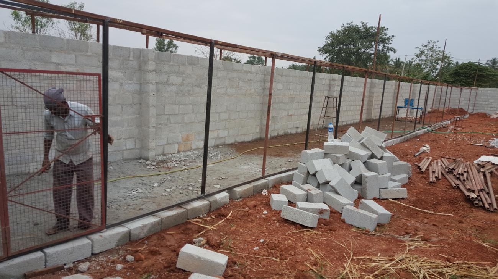
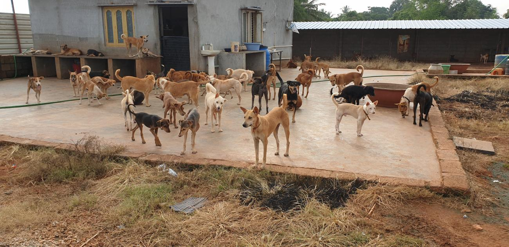

CONSTRUCTION OF THE SHELTER
In July 2017, he decided to find a better solution to the housing problem for his animals, and approached a person with an acre of land for rent in Kanakapura Road. That wasn’t going to come cheap, but it wouldn’t stop Praveen either. He sold his car, his family pledged their jewellery, and the shelter was built. Though initially estimated to cost 6 lakh, it went up to 19lakh, with maintenance costs inclusive. But his commitment towards helping the voiceless was so great, that he took additional loans, mortgaged the house and dedicated his life to the service of animals.





